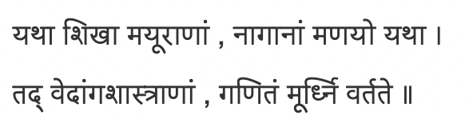

Teaching Maths to Kartikeya
I have two beliefs.
- Maths is the single most important subject to study.
It is is the only subject which gives us truth which will not be negated in the future, which is really ours.

-
School curriculums teach Mathematics at a very slow rate. I believe each child should be taught Maths at the pace he/she can take. Most children would then make progress at 3x the current curriculum. However, school curriculum is designed to take along 10 percentile kids.
Given the above, I teach Maths to Kartikeya nearly everyday. (And I teach only maths, no other subject).
We follow two books
- Elementary Algbera for school by Hall & Knight
- Prealgebra by Rusczyk
Regular testing ensures that concepts keep getting revised, and the bar of problem solving keeps getting higher.
Every week I give a 10 question test. Here are the test papers, in the hope that they may be of use to some one.